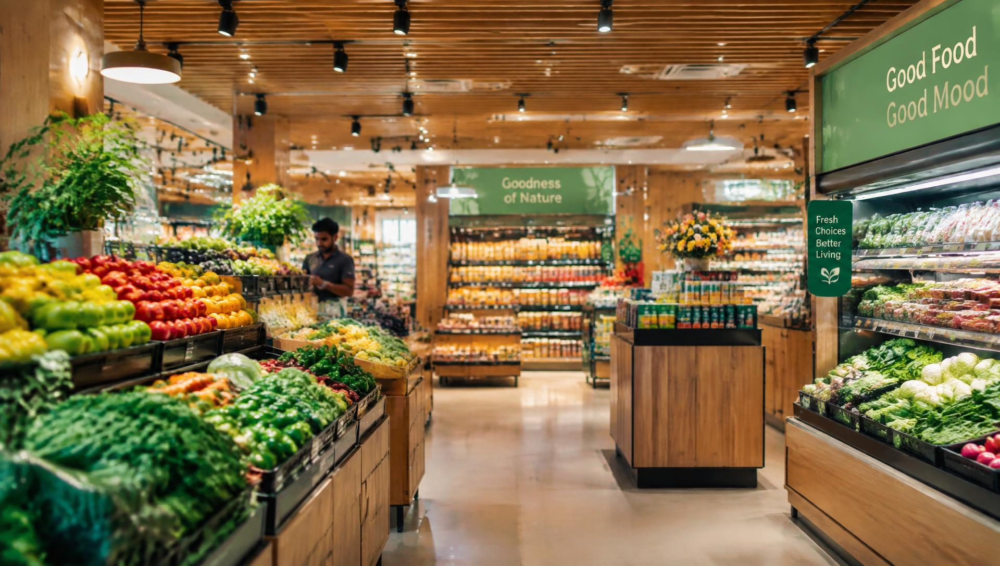
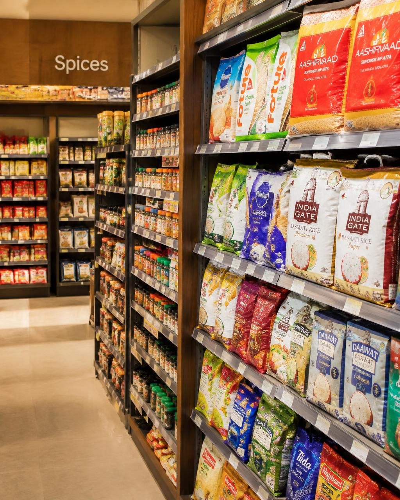

Fresh everyday picks
Fresh produce and dairy sit alongside the things households reach for every day.
Saini Supermarket brings the everyday range together for families in Baltana, Zirakpur — from groceries and fresh produce to dairy, snacks and home care.
Saini Supermarket is a local supermarket in Baltana, Zirakpur, Punjab. It brings groceries, fresh produce, dairy, snacks, personal care and household products together in one convenient place.
We believe everyday shopping should be simple to browse and easy to fit into the day. Whether it's pantry basics or something useful for home, Saini is here as a practical neighbourhood stop.
Explore the aisles
SAINI SUPERMARKET · ZIRAKPURFresh produce and dairy sit alongside the things households reach for every day.
Groceries, snacks, personal care and home essentials in one local supermarket.
Helpful service and a useful everyday selection for the neighbourhood.
A practical place to pick up daily needs in Baltana, Zirakpur.

Browse clearly arranged categories, explore the product showcase, or stop by in person to see what's on the shelves. The website is here to introduce the store and help you plan a visit — not to take online orders.
Find the store